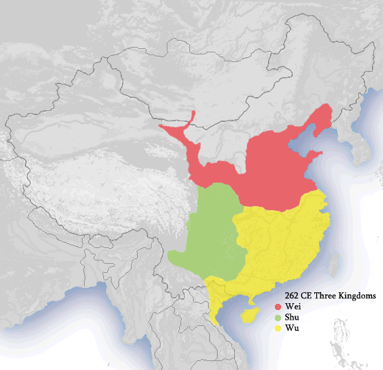

삼국시대의 삼국 가운데 하나. 후한 말기의 혼란한 상황 속에서 황제를 확보한 조조가 기반을 닦고, 그 아들 조비가 선양의 형식으로 즉위하였다. 그러나 이후 자신들도 권신 사마씨 일족에게 휘둘리다가 후한과 같은 운명을 맞았다.국호인 위魏는 조조가 위공(魏公)에 봉작될 당시 자신의 본거지로 삼고 있던 업군이 속한 지명 위魏에서 유래하였다.워낙 삼국지의 유명세가 강해서 보통 '위나라'라고만 지칭하면 사람들이 가장 많이 떠올리는 나라지만, 중국사에는 위나라가 여럿 있었기 때문에[5] 구별을 위해 황실의 성을 따서 '조위(曹魏)'라고 부르기도 한다.